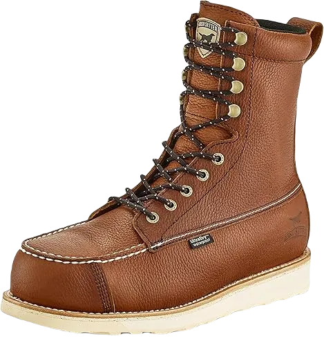

Top 6 Best Pull on Work Boots for Concrete 2024
Shoes designed for heavy work, particularly the best pull-on work boots for concrete, are essential for those engaged in demanding tasks. In this discussion, we will highlight the exceptional features and benefits of these boots, ensuring you understand their value. These shoes are crafted to meet various needs, providing essential support and comfort that workers require throughout their day.
People striving for success often face challenging work environments, and many laborers undertake strenuous tasks to achieve their goals. For these individuals, we present a thoughtful overview of footwear that can enhance their work experience. The rubber construction of these boots ensures durability and showcases the supportive system designed to provide optimal comfort. Lightweight yet powerful, these boots offer the necessary support to help you perform your tasks efficiently and effectively.
-
#1
Irish setter 83907
When selecting work shoes, it's crucial to assess their ability to provide support and water resistance, ensuring they effectively repel moisture. The right footwear should not only keep your feet dry but also offer comfort throughout your workday.
For individuals working in concrete environments, exposure to various challenging surfaces can be detrimental to foot health. That's why we recommend these specially designed shoes, equipped with the necessary features to tackle such conditions. They excel in keeping mud and debris at bay while providing essential support, making them ideal for demanding work conditions.
Additionally, these shoes come with quality rubber inner and outer soles that enhance their durability and performance. Beyond functionality, they also offer a wide range of colors and designs, appealing to personal style while ensuring that everyone finds a pair they love. These features make them not only practical but also aesthetically pleasing, meeting the needs of workers in a variety of settings. -
#2
Timberland pro ag boss pull on alloy toe
.webp)
When it comes to selecting shoes that cater to everyone working in various environments, comfort and quality are paramount. It's essential for footwear to be well-manufactured, ensuring it meets the demands of those who rely on it for daily tasks. The right pair of shoes can significantly enhance your working experience by providing the necessary support and comfort.
These shoes excel in offering numerous features designed to keep your feet comfortable and protected. They effectively repel water, helping to prevent swollen feet while providing solid support on slippery surfaces. This makes them an excellent choice for anyone needing reliable footwear in challenging conditions.
Additionally, these shoes are engineered for superior grip, allowing you to maintain stability in your workspace. Their vibrant color options make them not only functional but also visually appealing. Priced affordably, these shoes offer excellent value, and their oil-resistant properties ensure that they keep moisture and harmful substances at bay, promoting a safer working environment for you. -
#3
Ariatworkhog pull on water proof
.webp)
Let’s delve into the remarkable features of these shoes, designed specifically to provide exceptional support and comfort tailored to your needs. It's clear how beneficial these shoes can be, as they effectively repel water and ensure your feet remain dry and comfortable. With their outstanding waterproof capabilities, these shoes showcase their durability through the use of quality materials like leather and plastic layers, which offer the protection you require.
The supportive layers of these shoes are engineered to shield your feet from various external elements that may pose a risk. Their design is not only practical but also enhances your overall safety and comfort during wear. Additionally, the water-resistant properties of the upper layers are impressive, effectively addressing any concerns you might have about moisture or wet conditions.
Constructed from a variety of durable materials, these shoes excel in providing both protection and comfort. While ensuring safety, they also deliver the support necessary for your feet to thrive in demanding situations. With these shoes, you can trust that you are making a solid investment in your footwear needs. -
#4
Dr. Martens men’s icon 2295
.webp)
Finding the right shoes for the workplace is crucial, especially for those who need dependable support throughout their shifts. We’re excited to introduce a diverse selection of shoes that not only offer outstanding features and benefits but also come at a price point that won’t break the bank. These shoes are designed to endure various conditions, equipped with exceptional waterproof resistance, making them an ideal choice for any work environment, regardless of the challenges you face daily.
The upper sole of these shoes is thoughtfully crafted to enhance both comfort and usability. This design ensures that your feet remain at ease, even during long hours of wear. We’ve integrated high-quality rubber into the construction, which significantly improves slip resistance and provides a superior grip on a variety of surfaces, reducing the risk of accidents while you work. This combination of features makes these shoes a practical choice for anyone who needs reliable footwear in a demanding workplace.
Moreover, these shoes don’t just prioritize functionality; they also offer a modern look that can easily transition from work to casual settings. Whether you’re standing for extended periods, moving quickly across different terrains, or navigating slippery floors, these shoes are built to provide the support, durability, and safety you require. The thoughtful design and quality materials ensure that you can focus on your tasks without worrying about discomfort or foot injuries. Ultimately, these shoes are an investment in your comfort and safety, making them an excellent choice for anyone in need of reliable work footwear. -
#5
Wolverine floor hand water proof 10 inch soft toe
.webp)
People are actively seeking shoes that offer a great range of features, demonstrating how beneficial they can be for their specific needs. For those in search of work shoes, these options are sure to impress with their exceptional comfort and support for your feet.
These durable long shoes are designed to protect you from water and effectively keep mud at bay. Crafted to emulate the robust characteristics of Army boots, they provide excellent protection against elements that can lead to discomfort. Before finalizing these designs, we thoroughly assess their ability to deliver comfort and ensure they meet the highest standards for performance. Additionally, these shoes feature heat-resistant properties that enhance breathability, allowing for air circulation that maintains durability and stability, ensuring your feet remain in optimal condition.
Incorporating thoughtful design elements, these shoes cater to those who require reliable footwear in demanding environments. The combination of water resistance, mud protection, and heat resistance makes them an ideal choice for various work scenarios. You can trust that these shoes will keep your feet comfortable and well-supported throughout the day, providing a balance of functionality and style that is perfect for any task. -
#6
Georgia boot 5g814
.webp)
When it comes to selecting the ideal shoes for the workplace, it's crucial to examine which types will provide the best support and protection for your feet throughout your workday. The right footwear can make a significant difference, especially for those who spend long hours on their feet or face challenging working conditions. These shoes are designed with outstanding capabilities and are constructed from high-quality materials, ensuring that you receive the maximum comfort and support necessary for a productive day at work.
One of the standout features of these shoes is their ability to protect your feet from mud and water, effectively keeping harmful elements away. This design is especially beneficial for individuals working in outdoor or rugged environments, where exposure to the elements is unavoidable. In addition to being water-resistant, the shoes also incorporate specialized features that promote breathability. This ensures that your feet remain cool and comfortable, even during extended periods of wear. The focus on ventilation is essential, as it helps to prevent overheating and discomfort, allowing you to maintain your productivity throughout the day.
Moreover, the inner sole of these shoes is thoughtfully crafted to provide exceptional cushioning and protection. This feature is particularly important for individuals in physically demanding jobs, where the impact of walking or standing can take a toll on the feet.